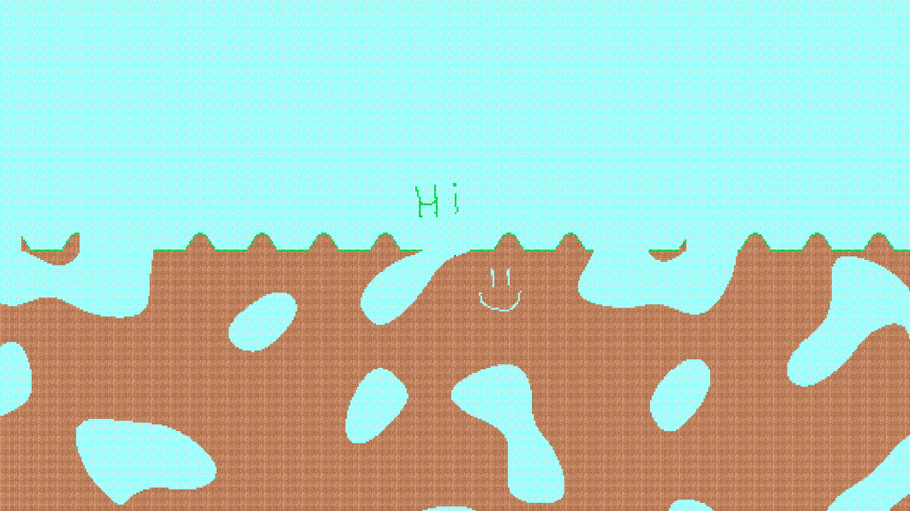

This dissertation explores whether an unsupervised biologically realistic Spiking Neural Network, with Spike-Timing-Dependent Plasticity, can reach classification capabilities comparable to the well-established machine learning method Long Short-Term Memory. This includes Python implementations of both types of neural networks with the aid of existing machine learning libraries. Both of these neural networks classify Morse code. While the Spiking Neural Network did achieve promising classification capabilities (F1 Score of 0.81), Long Short-Term Memory still exceeds it in terms of performance (F1 Score 0.99), how hard it is to train, and the time taken to train.
A web application for a Hackathon hosted by the Computer Science Society at the University of Surrey. It was a group project which won first place. The application is made for university markers to manage and mark student’s work and projects. The web application is made with Django, Svelte and has an SQLite database.
A web application which contains educational content, lessons and tests, for elderly citizens. The content aims to raise awareness and train elderly citizens to detect and respond appropriately to common cyber threats, so they can protect themselves when using the internet. This was a university group project with 7 people and I was the project lead as well as the backend quality assurance lead. JavaScript was used for frontend. Java with Javalin and a MySQL database was used for the backend. I did the vast majority of the backend and a large portion of the documentation. Several APIs were used, the project was compliant with GDPR, and was deployed using Docker.
A group project in which we created a Python application that gives audio description of videos and images for visually impaired users. Uses image-to-speech scene understanding using YOLO-based detection, SAM 3, BLIP, deterministic language generation, and offline text-to-speech.
An engine, written in Java that uses OpenGL, which loads and renders obj files. Supports textures, per-pixel lighting, specular lighting, loading and rendering multiple objects simultaneously and a movable camera.
An engine that again uses OpenGL however written in C++ this time. Supports textures, basic shading, movable camera.
A 2D world generated with Perlin noise with a controllable player. Written in C++ and uses the SFML library for rendering.

A Java application that can be used by a library for managing a database that stores information about books, library users, and information on the borrowing of books by users. It implements encryption with the SHA-256 algorithm for passwords and applies pattern matching using regular expressions for emails.
The classic game Pong made in Java using JavaFX. This was a project I did in collaboration with a friend and it was good practice of using git to work on a project in a group.